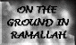
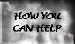

|
  |
PERSONAL STORIES Left: The cover of his letter, the main text reading: "And we will meet...". The two leaves under the flower are labeled "Mother" and "Father". Dear Family, Through my tears I hope of seeing you again. Now all I can do is live on our beautiful memories. Destiny has made me lose my way on the road that is my destiny, but your words call me and refresh me. They bring light to the darkness that surrounds the road. I know that this road is my only hope of seeing you again. My missing you knows no boundaries. But I just think of you and what a happy reunion we will have. The greatest thing in the world is to feel that there is someone thinking of you, and to know that you are liked and loved. When I am lonely, I can feel the sensation of love and hope from you. I think of the family and know that this is what God wants. To those who draw the road, I don't believe in the destiny God has written for me. You (God) have kept me from my mother's smile and from the people I love the most. But I will not give up on God's will. I will draw from my best memories and keep hope alive. Everyday with the sun I will remember our sweet days. So, remember me when you smile and when you sit and think. Keep a tear in your eyes for me and smile. These smiles should release you from the restrictions. Father, How are you? I hope you are all right and in good health. My pen cannot articulate your greatness but no matter what I write you will still believe that I have not done my duties toward you. You are above this situation. Mother, How are you? I hope to God you are in good health when you get this letter. I hope that God is satisfied with you. Believe me mother, we might not have shown our appreciation for your strength in crisis but you are great. I wish now that I had heard your advice because you were the only one who knew truly good things and bad. My eyes can't see you but my heart will never forget you. You have all my respect, Mother. Grandmother, How are you? I trust your health is good. That is my wish to God for you. Believe me when I say that you are always on my mind and I will never forget you, my sweet grandmother. Uncle and family, How are you? I hope all of you are doing well and in good condition. You are all very special to my heart. Not seeing you is painful but our hearts stay close no matter what distance separates us. Uncle, How are you? I hope you are doing well. Congratulations on the new baby boy. Aunt, How are you? I trust you are in good health. I was happy to hear about the new baby. Congratulations!! Say "hi" to the whole family, the neighbors, and anyone who asks about me. You have my respect and appreciation. On the next visit will you please bring me: Ustaz Ramsey Back to RAMSEY'S STORY or PERSONAL STORIES |